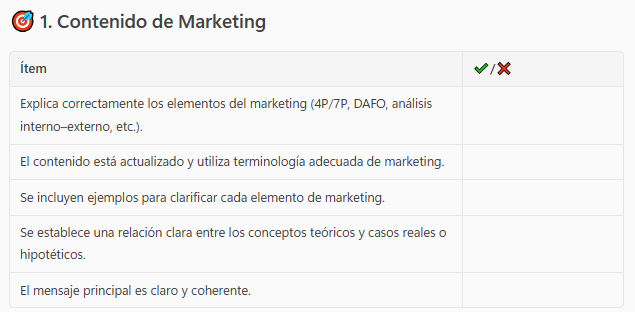
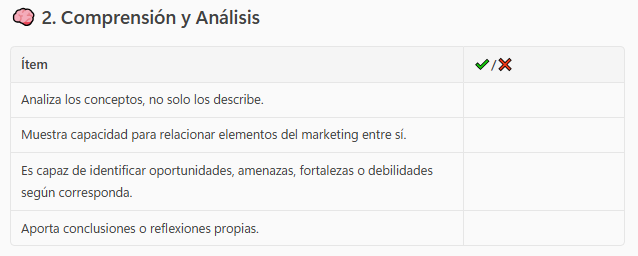
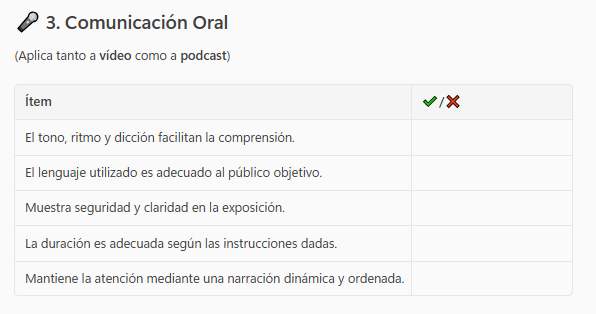
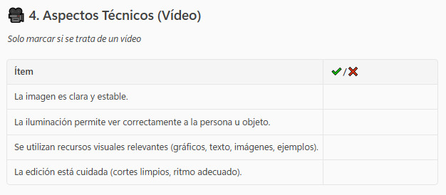
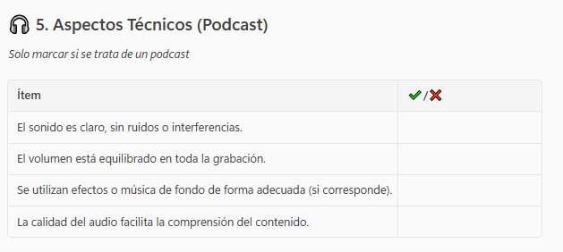
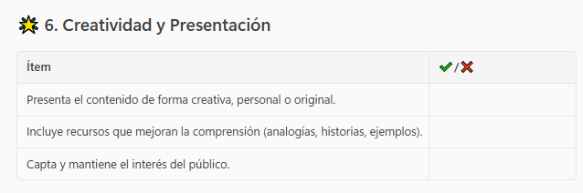
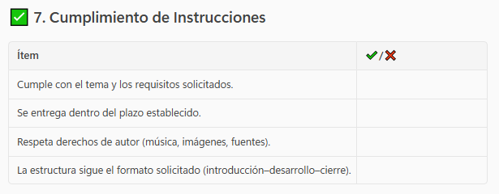

Actividad de desarrollo
Descripción:
En esta etapa del marketing cada grupo deberá llevar las estrategias que aplicará a su empresa, para poder alcanzar los objetivos planteados anteriormente. Cada grupo explicará porqué ha decidido llevar a cabo las mismas y profundizará en la parte de la comunicación. Deben desarrollar estrategias para cada elemento del marketing mix. En el contexto que estamos trabajando la planificación y ejecución de acciones específicas destinadas a transmitir mensajes al público objetivo es clave.
Agrupamiento: 2 grupos (3pax/grupo)
Sesiones: 2 sesiones.
Herramientas: internet, técnicas de storytelling, programas para grabar videos: CapCut, InShot..
Producto: Grabar un video o un podcast sobre como daríamos a conocer el producto o servicio, dónde podamos ver de forma visible lo que queremos comunicar y a quiénes.
Finalidad: Ver que dentro de los elementos del marketing mix la comunicación es un aspecto muy importante ya que informa y describe las características de ese producto o servicio.
Recomendaciones para el vídeo o podcast:
- Duración no superior a 5 minutos.
- Introducción
- Presentación.
- Poner música de fondo.
- Locución fluida y dinámica.
- Es creativo y dinámico
Entrega: La actividad debe ser subida al apartado de tareas fecha tope el 27 de abril de 2026.
Evaluación: Se adjunta la lista de cotejo que se tendrá en cuenta para valorar el vídeo y el podcast:







Recuerda que...
La implementación de las estrategias de marketing implica tomar decisiones con respecto a cada uno de los elementos del marketing-mix. Los elementos del marketing mix son el vehículo para alcanzar los objetivos.